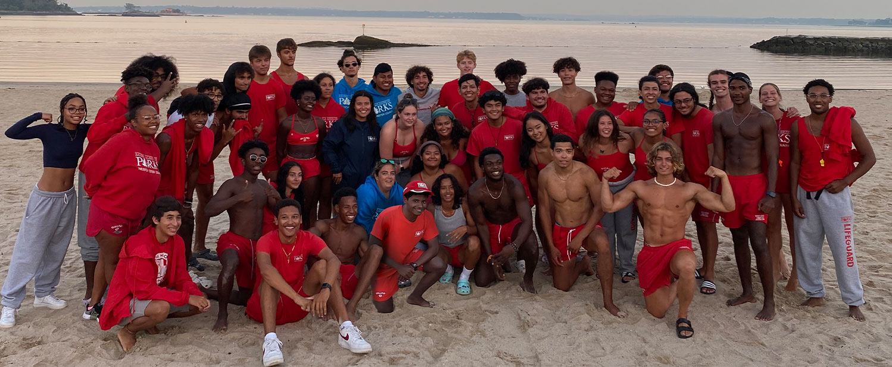

Defining Leadership
"I hope you will join me in celebrating Westchester for all that it has to offer – a unique tapestry of people, places and cultures that when blended together, create the County we all love to call home." -County Executive Kenneth W. Jenkins


Westchester County Working For You
Every County department is hard at work for the nearly one million people who call Westchester home.
Department of Community Mental Health
The Department of Community Mental Health can help you coordinate services for behavioral health issues for yourself and family members. Behavior health includes mental illness, developmental and intellectual disabilities, and substance use disorders.
The Catalyst: Westchester County Economic Development
The Catalyst is an initiative by the Office of Economic Development, Industrial Development Agency, and Local Development Corporation to promote county business growth, development, and innovation.
Operation Prom National Network
Operation Prom is a non-profit dedicated to supplying high school seniors with formal prom attire, with focuses on inclusion and sustainability.
#MyWestchester Youtube Video
Apply to be a Lifeguard!
Westchester Count Parks lifeguards wanted for the Summer 2025 season.
